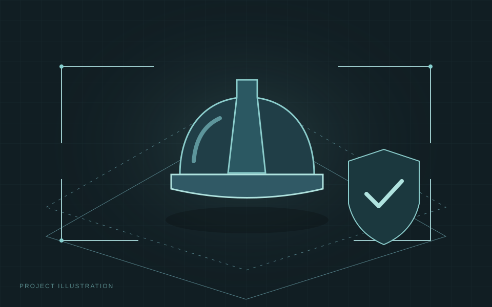
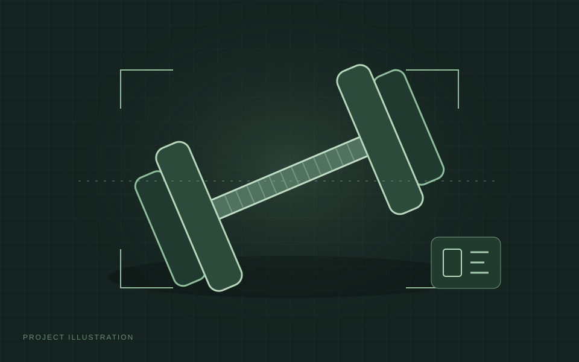
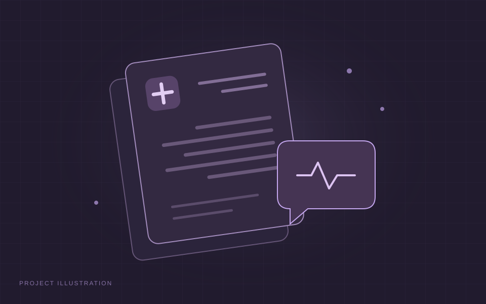
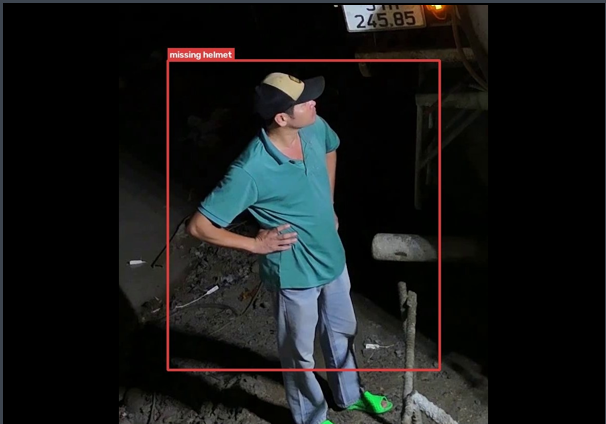
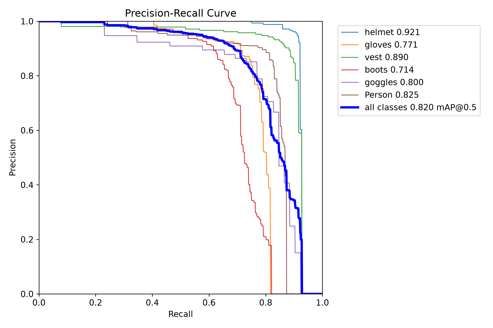
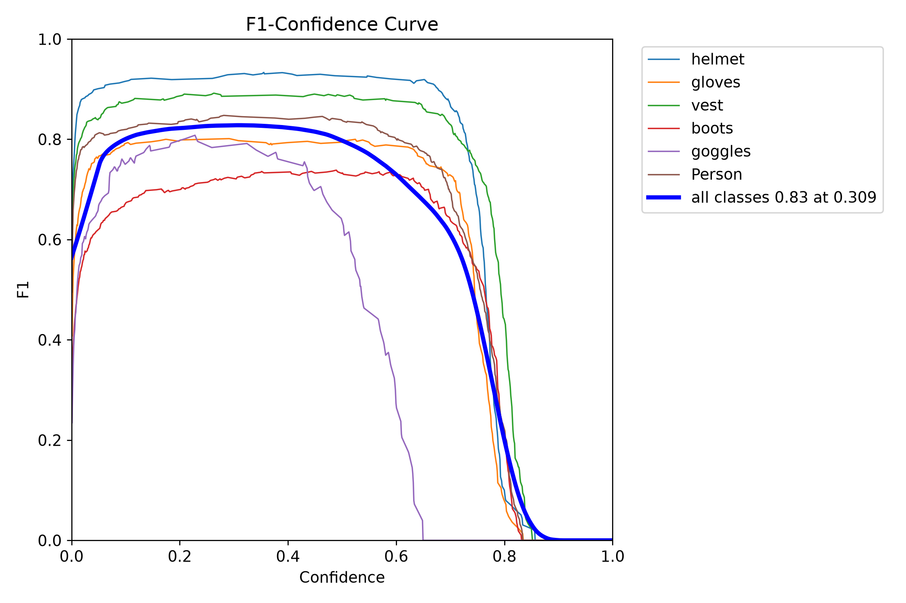
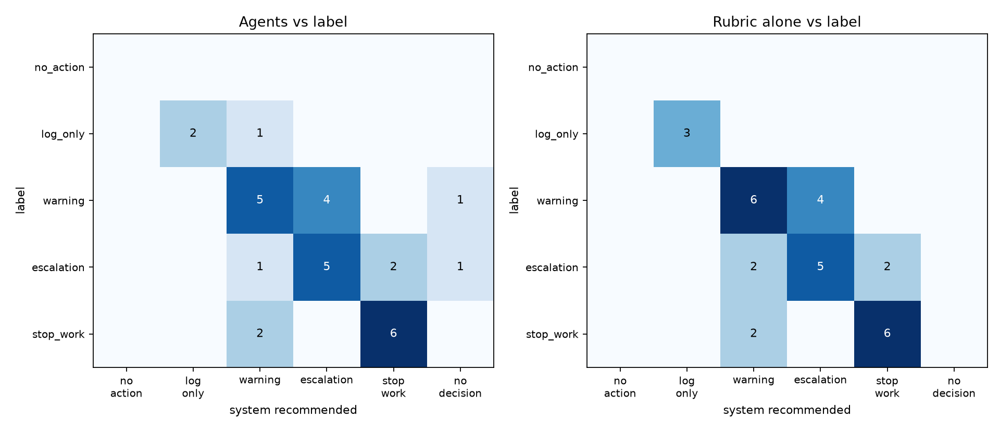
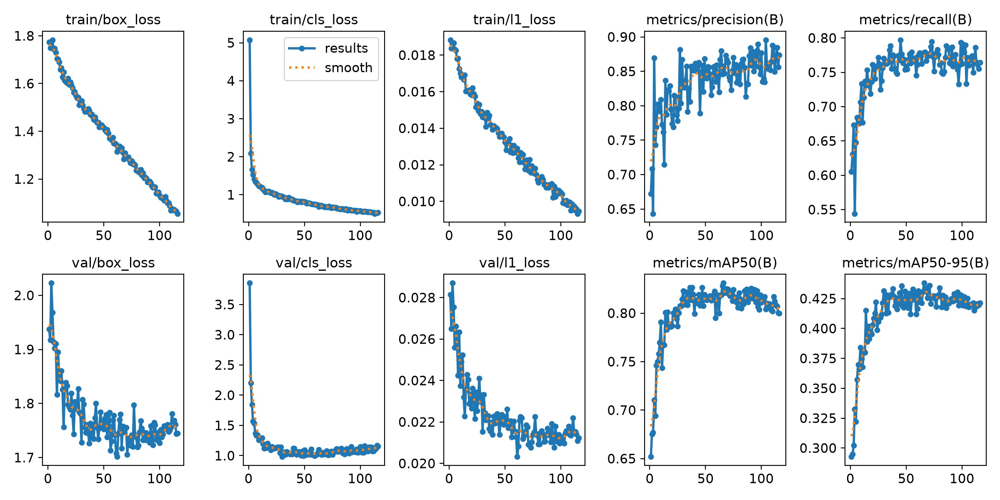

AI Intern
Deep Scan Technologies
March–August 2025
Built and optimized AI agents for Nabrah. Developed voice and text workflows with n8n and GPT-based models, integrating ElevenLabs and Whisper.
I'm Abdullah, an AI graduate focused on agentic systems. I connect models, tools, and knowledge to build practical solutions with human oversight.
Explore my projectsI'm an AI graduate focused on agentic systems. My work brings together multi-agent workflows, retrieval, computer vision, and language models. I graduated in Artificial Intelligence from Umm Al-Qura University in 2026. I'm pursuing Agentic AI Engineer roles where I can build useful, reliable systems that reason with evidence and keep people in control.
THE STACK
Whisper and Transformers use their publishers’ logos: OpenAI and Hugging Face.

A context-aware industrial safety supervisor connecting PPE detection, grounded reasoning, and human review.

A fitness coach with local equipment recognition, bilingual tutorials, and an AI routine generator.

An Arabic medical Q&A research project built through memory-efficient model fine-tuning.
Autonomous Industrial Safety Supervisor
Saudi Digital Academy team capstone, 2026





Evaluation figures: Nabeeh project repository. Figures and résumé metrics may describe different evaluation runs.
A missing glove means something different on a walkway than at a grinding station.
Results reported in my résumé, not a new evaluation run. Nabeeh is a capstone prototype.
YOLO26, ByteTrack, LangGraph, RAG, FAISS, FastAPI, and SQLite. Project scope spans perception, knowledge retrieval, agent reasoning, persistence, evaluation, and guardrails.
Developed as a team capstone for the Saudi Digital Academy Agentic AI Engineering Bootcamp.
Explore three scenarios documented in Nabeeh’s README. The observation is the same: no gloves detected.
On the walkway
No glove violation
Only a helmet is required in this example zone. A missing glove is not automatically a safety violation.
Context comes before severity reasoning.
At the grinding station
Create a ticket
Hand protection is required for the abrasive-wheel hazard. The same observation now warrants a recorded finding.
Zone requirements change the response.
Third finding this week
Escalate for approval
The README’s repeat-finding example proposes a stop-work escalation, pending human approval. Worker history depends on supervisor-linked identity.
A proposed action is not an autonomous authorization.
Explanatory walkthrough, not live detection or AI inference. No camera, personal data, or external AI service is used.
YOLO26 detects PPE. ByteTrack and temporal confirmation reduce single-frame mistakes.
Agents use tools, regulatory context, and recorded history to assess a proportionate response.
Guardrails and human approval keep critical actions accountable.
Computer vision and Arabic language models.
Different problems, the same practical focus.
A fitness app that recognizes equipment locally and delivers bilingual tutorials.
Build: Compressed MobileNetV3 through pruning and quantization, paired with a GPT-3.5-turbo routine generator. Delivery through GitHub Actions.
Result: 99.02% classification accuracy and a 5.7 MB model, reported in my résumé.
October–December 2025
MobileNetV3
Pruning and quantization
GPT-3.5-turbo
GitHub Actions
A medical question-answering project exploring Arabic model fine-tuning.
Build: Fine-tuned Jais-family-256m with QLoRA on AHQAD, using Arabic text normalization and memory-conscious training.
Evaluation: BLEU, ROUGE, and BERTScore. No numerical benchmark is claimed without a supplied result.
Research project, not a clinical advice service.
December 2024–February 2025
Jais-family-256m
QLoRA
AHQAD
Arabic NLP
Deep Scan Technologies
March–August 2025
Built and optimized AI agents for Nabrah. Developed voice and text workflows with n8n and GPT-based models, integrating ElevenLabs and Whisper.
KAUST Academy
February 2026
Completed an 80-hour Advanced AI program covering transfer learning, image segmentation, object detection, and data augmentation, delivered with UQU.
Saudi Digital Academy, Riyadh
August–October 2026
Umm Al-Qura University, Makkah
2022–2026
LET’S BUILD SOMETHING USEFUL
For Agentic AI opportunities, project conversations, or a closer look at my work.
abdullahomalharbi@gmail.com